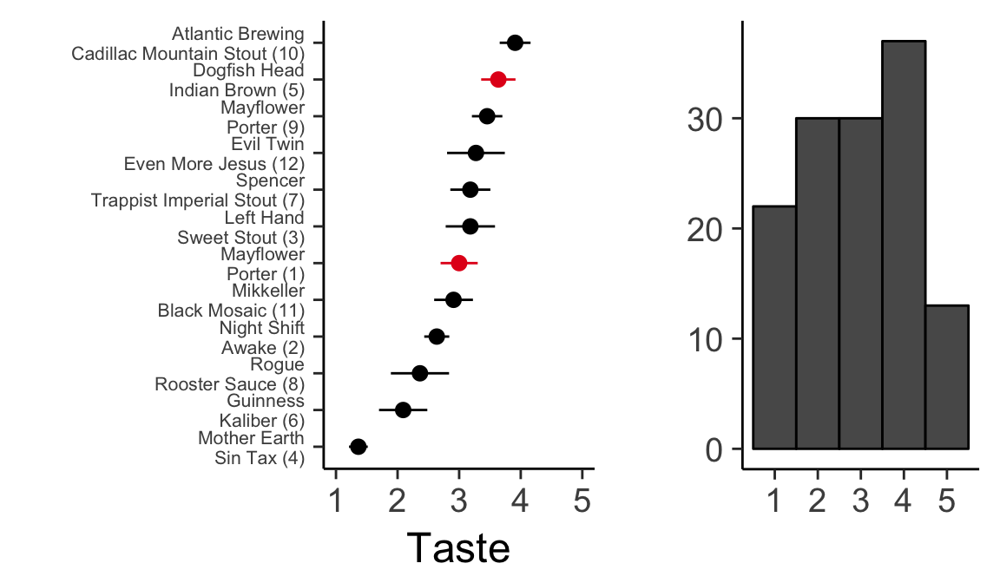
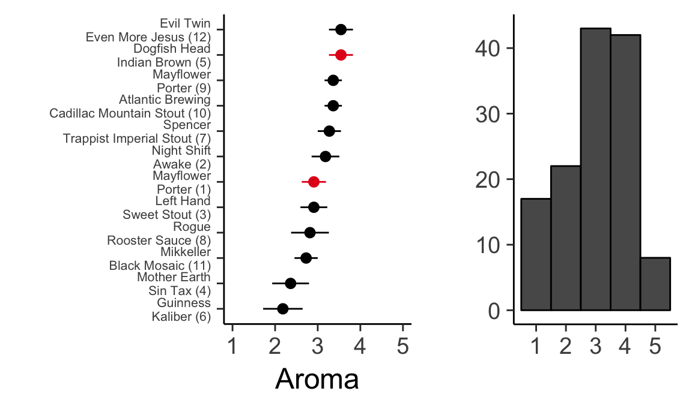
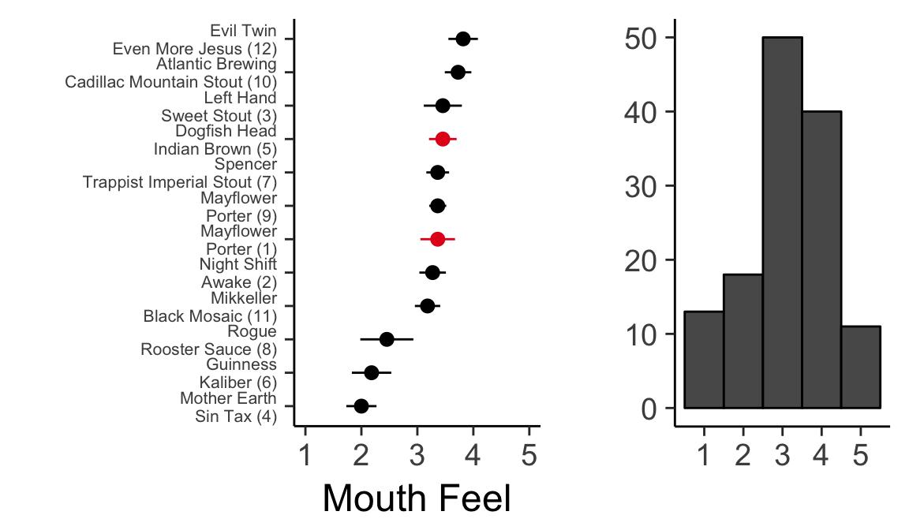
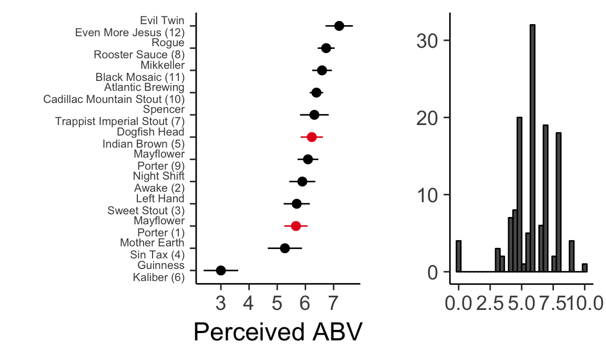
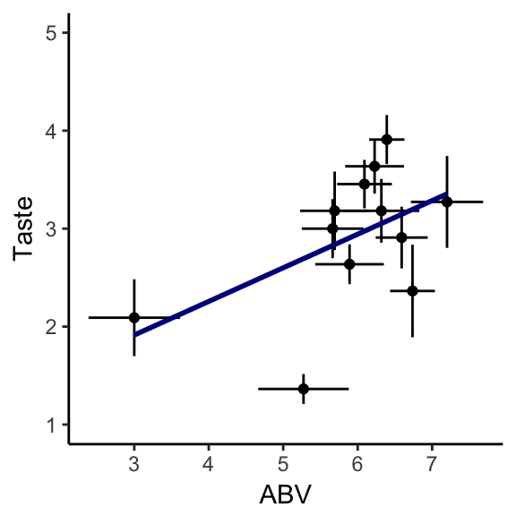

# Update knitr chunk options
# https://yihui.name/knitr/options/#chunk-options
knitr::opts_chunk$set(
comment = NA,
fig.align = "center",
tidy = FALSE,
fig.path = paste0("figure/", knitr::current_input(), "/")
)Last updated: 2018-02-27
Code version: f5489c5
The code below loads and analyzes the Burge Lab 2018 Porter Tasting Night Results





t_sum = t_format %>% group_by(Sex,attribute, beer_name) %>% summarize(mu = mean(value)) %>% group_by(beer_name, attribute) %>% mutate(min_val=min(mu))
t_sum_line = t_sum %>% spread(key=Sex, value=mu) %>% mutate(sex_col=ifelse(Female>Male,“Female”,“Male”))
g=ggplot(t_sum %>% filter(attribute %in% c(“taste”))) g+geom_segment(aes(y=Male, yend=Female, x=reorder(beer_name, min_val), xend=reorder(beer_name, min_val), color=sex_col), data=t_sum_line %>% filter(attribute %in% c(“taste”)), size=1.2)+ stat_summary(aes(x=reorder(beer_name, min_val), y = mu, color=Sex), fun.y=mean, geom=“point”, size=2)+ theme_classic()+ scale_color_brewer(palette=“Set1”)+ coord_cartesian(ylim=c(1,5))+ scale_x_discrete(“”)+ coord_flip()
g=ggplot(t_format %>% filter(attribute %in% c(“Aroma”))) g+stat_summary(aes(x=reorder(beer_name, value), y = value))+ theme_classic()+ scale_x_discrete(“”)+ scale_y_continuous(“Aroma”)+ coord_flip(ylim=c(1,5))
g=ggplot(t_sum %>% filter(attribute %in% c(“Aroma”))) g+geom_segment(aes(y=Male, yend=Female, x=reorder(beer_name, min_val), xend=reorder(beer_name, min_val), color=sex_col), data=t_sum_line %>% filter(attribute %in% c(“Aroma”)), size=1.2)+ stat_summary(aes(x=reorder(beer_name, min_val), y = mu, color=Sex), fun.y=mean, geom=“point”, size=2)+ theme_classic()+ scale_color_brewer(palette=“Set1”)+ coord_cartesian(ylim=c(1,5))+ scale_x_discrete(“”)+ coord_flip()
g=ggplot(t_format %>% filter(attribute %in% c(“MF”))) g+stat_summary(aes(x=reorder(beer_name, value), y = value))+ theme_classic()+ scale_x_discrete(“”)+ scale_y_continuous(“Mouth Feel”)+
coord_flip(ylim=c(1,5))
g=ggplot(t_sum %>% filter(attribute %in% c(“MF”))) g+geom_segment(aes(y=Male, yend=Female, x=reorder(beer_name, min_val), xend=reorder(beer_name, min_val), color=sex_col), data=t_sum_line %>% filter(attribute %in% c(“MF”)), size=1.2)+ stat_summary(aes(x=reorder(beer_name, min_val), y = mu, color=Sex), fun.y=mean, geom=“point”, size=2)+ theme_classic()+ scale_color_brewer(palette=“Set1”)+ coord_cartesian(ylim=c(1,5))+ scale_x_discrete(“”)+ coord_flip()
t_sum = t_format t_format$BAscore g=ggplot(t_format %>% filter(attribute %in% c(“taste”))) g+stat_summary(aes(x=BAscore, y = value, color=attribute, group=beer))+ theme_classic()+ scale_color_brewer(palette=“Set1”)+ scale_x_continuous(“Beer Advocate Score”)+ coord_cartesian(ylim=c(1,5), xlim=c(1,5))
g=ggplot(t_format %>% filter(attribute %in% c(“taste”))) g+stat_summary(aes(x=ABV, y = value, color=attribute, group=beer))+ theme_classic()+ scale_color_brewer(palette=“Set1”)+ scale_x_continuous(“ABV”)
g=ggplot(t_format %>% filter(attribute %in% c(“ABV”))) g+stat_summary(aes(x=ABV, y = value, color=attribute, group=beer))+ theme_classic()+ scale_color_brewer(palette=“Set1”)+ geom_abline(slope=1, intercept=0)+ coord_cartesian(ylim=c(0,13), xlim=c(0,13))
g=ggplot(t_format %>% filter(attribute %in% c(“ABV”))) g+stat_summary(aes(x=ABV, y = value, color=Sex, group=interaction(beer,Sex)))+ theme_classic()+ scale_color_brewer(palette=“Set1”)+ geom_abline(slope=1, intercept=0)+ coord_cartesian(ylim=c(0,13), xlim=c(0,13))
g=ggplot(t_format %>% filter(attribute %in% c(“ABV”)) %>% filter(Lab %in% c(“Burge”, “Li”))) g+stat_summary(aes(x=ABV, y = value, color=Lab, group=interaction(beer,Lab)))+ theme_classic()+ scale_color_brewer(palette=“Set2”)+ geom_abline(slope=1, intercept=0)+ coord_cartesian(ylim=c(0,13), xlim=c(0,13))
lab_sum = t_format %>% filter(Lab %in% c(“Burge”, “Li”)) %>% group_by(Lab, attribute, beer) %>% summarize(mu = mean(value), sd = sd(value)) %>% mutate(lab_attribute = interaction(Lab, attribute)) %>% ungroup() %>% select(lab_attribute, mu, beer)
spread_data = lab_sum %>% spread(key=lab_attribute, value=mu)
g=ggplot(spread_data) g+geom_point(aes(x=Burge.taste, y=Li.taste))+ geom_text_repel(aes(x=Burge.taste, y=Li.taste, label=beer))+ theme_classic()+ coord_cartesian(ylim=c(1,5), xlim=c(1,5))+ geom_abline(slope=1,intersect=0)
##g=ggplot(spread_data) g+geom_point(aes(x=Burge.Aroma, y=Li.Aroma))+ theme_classic()+ coord_cartesian(ylim=c(1,5), xlim=c(1,5))
g=ggplot(spread_data) g+geom_point(aes(x=Burge.MF, y=Li.MF))+ theme_classic()+ coord_cartesian(ylim=c(1,5), xlim=c(1,5))
g=ggplot(spread_data) g+geom_point(aes(x=Li.taste, y=Li.MF))+ theme_classic()+ coord_cartesian(ylim=c(1,5), xlim=c(1,5))
g=ggplot(spread_data) g+geom_point(aes(x=Li.taste, y=Li.Aroma))+ theme_classic()+ coord_cartesian(ylim=c(1,5), xlim=c(1,5))
g=ggplot(spread_data) g+geom_point(aes(x=Li.MF, y=Li.Aroma))+ theme_classic()+ coord_cartesian(ylim=c(1,5), xlim=c(1,5))
Li
R version 3.4.0 (2017-04-21)
Platform: x86_64-apple-darwin15.6.0 (64-bit)
Running under: macOS 10.13.3
Matrix products: default
BLAS: /Library/Frameworks/R.framework/Versions/3.4/Resources/lib/libRblas.0.dylib
LAPACK: /Library/Frameworks/R.framework/Versions/3.4/Resources/lib/libRlapack.dylib
locale:
[1] en_US.UTF-8/en_US.UTF-8/en_US.UTF-8/C/en_US.UTF-8/en_US.UTF-8
attached base packages:
[1] stats graphics grDevices utils datasets methods base
other attached packages:
[1] bindrcpp_0.2 cowplot_0.8.0 RColorBrewer_1.1-2
[4] ggrepel_0.7.0 ggplot2_2.2.1 broom_0.4.2
[7] tidyr_0.7.1 dplyr_0.7.4
loaded via a namespace (and not attached):
[1] Rcpp_0.12.13 compiler_3.4.0 git2r_0.21.0 plyr_1.8.4
[5] bindr_0.1 tools_3.4.0 digest_0.6.15 evaluate_0.10.1
[9] tibble_1.3.4 nlme_3.1-131 gtable_0.2.0 lattice_0.20-35
[13] pkgconfig_2.0.1 rlang_0.2.0 psych_1.7.8 yaml_2.1.16
[17] parallel_3.4.0 stringr_1.3.0 knitr_1.20 tidyselect_0.2.1
[21] rprojroot_1.3-2 grid_3.4.0 glue_1.2.0 R6_2.2.2
[25] foreign_0.8-69 rmarkdown_1.8 purrr_0.2.3 reshape2_1.4.2
[29] magrittr_1.5 backports_1.1.1 scales_0.5.0 htmltools_0.3.6
[33] assertthat_0.2.0 mnormt_1.5-5 colorspace_1.3-2 labeling_0.3
[37] stringi_1.1.6 lazyeval_0.2.1 munsell_0.4.3 This R Markdown site was created with workflowr